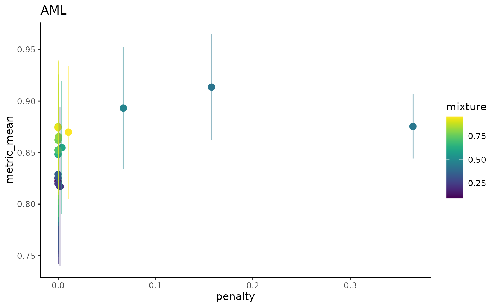
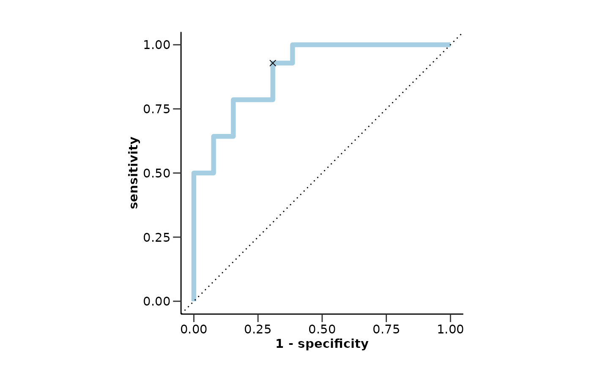
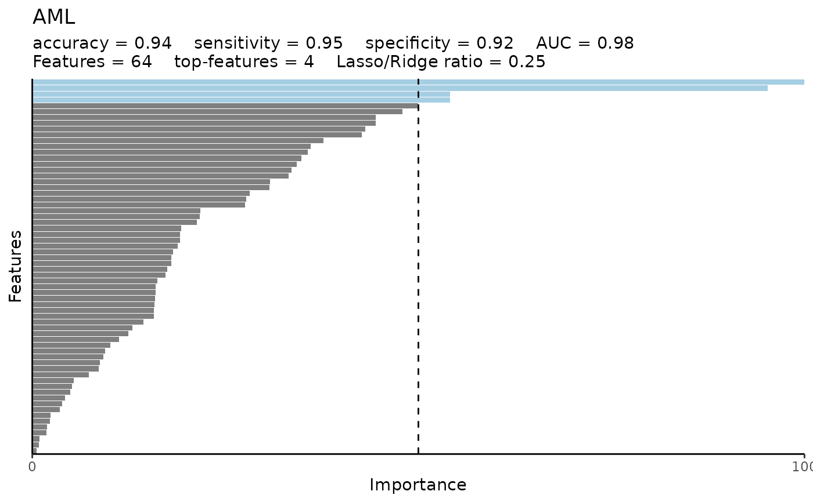
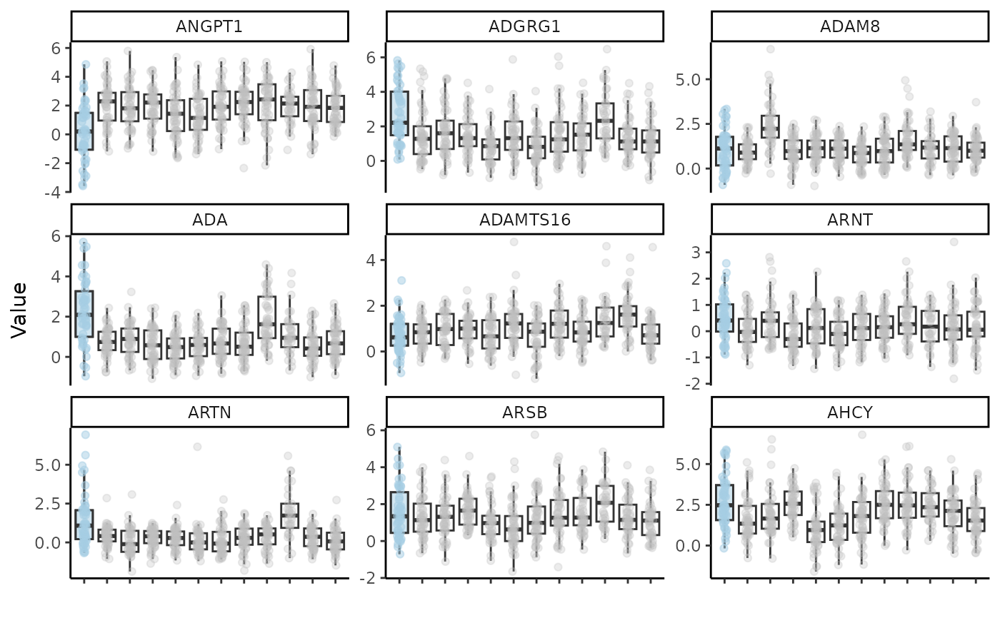

do_elnet() runs the elastic net classification model pipeline. It splits the
data into training and test sets, creates class-balanced case-control groups,
and fits the model. It also performs hyperparameter optimization, fits the best
model, tests it, and plots useful the feature variable importance.
Usage
do_elnet(
olink_data,
metadata,
case,
wide = TRUE,
balance_groups = TRUE,
only_female = NULL,
only_male = NULL,
exclude_cols = "Sex",
ratio = 0.75,
type = "lasso",
cv_sets = 5,
grid_size = 10,
ncores = 4,
hypopt_vis = TRUE,
palette = NULL,
vline = TRUE,
subtitle = c("accuracy", "sensitivity", "specificity", "auc", "features",
"top-features", "mixture"),
nfeatures = 9,
points = T,
seed = 123
)Arguments
- olink_data
Olink data.
- metadata
Metadata.
- case
Disease to predict.
- wide
Whether the data is wide format. Default is TRUE.
- balance_groups
Whether to balance the groups. Default is TRUE.
- only_female
Vector of diseases that are female specific. Default is NULL.
- only_male
Vector of diseases that are male specific. Default is NULL.
- exclude_cols
Columns to exclude from the data before the model is tuned. Default is "Sex".
- ratio
Ratio of training data to test data. Default is 0.75.
- type
Type of regularization. Default is "lasso". Other options are "ridge" and "elnet".
- cv_sets
Number of cross-validation sets. Default is 5.
- grid_size
Size of the hyperparameter optimization grid. Default is 10.
- ncores
Number of cores to use for parallel processing. Default is 4.
- hypopt_vis
Whether to visualize hyperparameter optimization results. Default is TRUE.
- palette
The color palette for the plot. If it is a character, it should be one of the palettes from
get_hpa_palettes(). Default is NULL.- vline
Whether to add a vertical line at 50% importance. Default is TRUE.
- subtitle
Vector of subtitle elements to include in the plot. Default is a list with all.
- nfeatures
Number of top features to include in the boxplot. Default is 9.
- points
Whether to add points to the boxplot. Default is TRUE.
- seed
Seed for reproducibility. Default is 123.
Value
A list with results for each disease. The list contains:
hypopt_res: Hyperparameter optimization results.
finalfit_res: Final model fitting results.
testfit_res: Test model fitting results.
var_imp_res: Variable importance results.
Examples
do_elnet(example_data,
example_metadata,
"AML",
balance_groups = TRUE,
wide = FALSE,
type = "elnet",
palette = "cancers12",
cv_sets = 5,
grid_size = 20,
ncores = 1)
#> Joining with `by = join_by(DAid)`
#> Warning: Too little data to stratify.
#> • Resampling will be unstratified.
#> Sets and groups are ready. Model fitting is starting...
#> Classification model for AML as case is starting...
#> $hypopt_res
#> $hypopt_res$elnet_tune
#> # Tuning results
#> # 5-fold cross-validation using stratification
#> # A tibble: 5 × 5
#> splits id .metrics .notes .predictions
#> <list> <chr> <list> <list> <list>
#> 1 <split [65/17]> Fold1 <tibble [20 × 6]> <tibble [0 × 3]> <tibble [340 × 7]>
#> 2 <split [65/17]> Fold2 <tibble [20 × 6]> <tibble [0 × 3]> <tibble [340 × 7]>
#> 3 <split [65/17]> Fold3 <tibble [20 × 6]> <tibble [0 × 3]> <tibble [340 × 7]>
#> 4 <split [66/16]> Fold4 <tibble [20 × 6]> <tibble [0 × 3]> <tibble [320 × 7]>
#> 5 <split [67/15]> Fold5 <tibble [20 × 6]> <tibble [0 × 3]> <tibble [300 × 7]>
#>
#> $hypopt_res$elnet_wf
#> ══ Workflow ════════════════════════════════════════════════════════════════════
#> Preprocessor: Recipe
#> Model: logistic_reg()
#>
#> ── Preprocessor ────────────────────────────────────────────────────────────────
#> 4 Recipe Steps
#>
#> • step_normalize()
#> • step_nzv()
#> • step_corr()
#> • step_impute_knn()
#>
#> ── Model ───────────────────────────────────────────────────────────────────────
#> Logistic Regression Model Specification (classification)
#>
#> Main Arguments:
#> penalty = tune::tune()
#> mixture = tune::tune()
#>
#> Computational engine: glmnet
#>
#>
#> $hypopt_res$train_set
#> # A tibble: 82 × 102
#> DAid AARSD1 ABL1 ACAA1 ACAN ACE2 ACOX1 ACP5 ACP6 ACTA2
#> <chr> <dbl> <dbl> <dbl> <dbl> <dbl> <dbl> <dbl> <dbl> <dbl>
#> 1 DA00003 NA NA NA 0.989 NA 0.330 1.37 NA NA
#> 2 DA00004 3.41 3.38 1.69 NA 1.52 NA 0.841 0.582 1.70
#> 3 DA00005 5.01 5.05 0.128 0.401 -0.933 -0.584 0.0265 1.16 2.73
#> 4 DA00006 6.83 1.18 -1.74 -0.156 1.53 -0.721 0.620 0.527 0.772
#> 5 DA00007 NA NA 3.96 0.682 3.14 2.62 1.47 2.25 2.01
#> 6 DA00008 2.78 0.812 -0.552 0.982 -0.101 -0.304 0.376 -0.826 1.52
#> 7 DA00010 1.83 1.21 -0.912 -1.04 -0.0918 -0.304 1.69 0.0920 2.04
#> 8 DA00011 3.48 4.96 3.50 -0.338 4.48 1.26 2.18 1.62 1.79
#> 9 DA00012 4.31 0.710 -1.44 -0.218 -0.469 -0.361 -0.0714 -1.30 2.86
#> 10 DA00013 1.31 2.52 1.11 0.997 4.56 -1.35 0.833 2.33 3.57
#> # ℹ 72 more rows
#> # ℹ 92 more variables: ACTN4 <dbl>, ACY1 <dbl>, ADA <dbl>, ADA2 <dbl>,
#> # ADAM15 <dbl>, ADAM23 <dbl>, ADAM8 <dbl>, ADAMTS13 <dbl>, ADAMTS15 <dbl>,
#> # ADAMTS16 <dbl>, ADAMTS8 <dbl>, ADCYAP1R1 <dbl>, ADGRE2 <dbl>, ADGRE5 <dbl>,
#> # ADGRG1 <dbl>, ADGRG2 <dbl>, ADH4 <dbl>, ADM <dbl>, AGER <dbl>, AGR2 <dbl>,
#> # AGR3 <dbl>, AGRN <dbl>, AGRP <dbl>, AGXT <dbl>, AHCY <dbl>, AHSP <dbl>,
#> # AIF1 <dbl>, AIFM1 <dbl>, AK1 <dbl>, AKR1B1 <dbl>, AKR1C4 <dbl>, …
#>
#> $hypopt_res$test_set
#> # A tibble: 34 × 102
#> DAid AARSD1 ABL1 ACAA1 ACAN ACE2 ACOX1 ACP5 ACP6 ACTA2 ACTN4
#> <chr> <dbl> <dbl> <dbl> <dbl> <dbl> <dbl> <dbl> <dbl> <dbl> <dbl>
#> 1 DA00… 3.39 2.76 1.71 0.0333 1.76 -0.919 1.54 2.15 2.81 0.742
#> 2 DA00… 1.42 1.25 -0.816 -0.459 0.826 -0.902 0.647 1.30 0.798 -0.0659
#> 3 DA00… 4.39 3.34 -0.452 -0.868 0.395 1.71 1.49 -0.0285 0.200 -0.532
#> 4 DA00… 3.31 1.90 NA -0.926 0.408 0.687 1.03 0.612 2.19 0.258
#> 5 DA00… 1.46 0.832 -2.73 -0.371 2.27 0.0234 0.144 0.826 1.98 -0.280
#> 6 DA00… 2.62 2.48 0.537 -0.215 1.82 0.290 1.27 1.11 0.206 1.23
#> 7 DA00… 2.47 2.16 -0.486 NA 0.386 NA 1.38 0.536 1.86 0.00982
#> 8 DA00… 3.62 3.06 -1.34 0.965 1.05 1.53 0.152 -0.124 2.81 0.285
#> 9 DA00… 4.39 3.31 0.454 0.290 2.68 0.116 -1.32 0.945 2.14 -0.00881
#> 10 DA00… 0.964 2.94 1.55 1.67 2.50 0.164 1.83 1.46 3.03 0.449
#> # ℹ 24 more rows
#> # ℹ 91 more variables: ACY1 <dbl>, ADA <dbl>, ADA2 <dbl>, ADAM15 <dbl>,
#> # ADAM23 <dbl>, ADAM8 <dbl>, ADAMTS13 <dbl>, ADAMTS15 <dbl>, ADAMTS16 <dbl>,
#> # ADAMTS8 <dbl>, ADCYAP1R1 <dbl>, ADGRE2 <dbl>, ADGRE5 <dbl>, ADGRG1 <dbl>,
#> # ADGRG2 <dbl>, ADH4 <dbl>, ADM <dbl>, AGER <dbl>, AGR2 <dbl>, AGR3 <dbl>,
#> # AGRN <dbl>, AGRP <dbl>, AGXT <dbl>, AHCY <dbl>, AHSP <dbl>, AIF1 <dbl>,
#> # AIFM1 <dbl>, AK1 <dbl>, AKR1B1 <dbl>, AKR1C4 <dbl>, AKT1S1 <dbl>, …
#>
#> $hypopt_res$hypopt_vis

#>
#>
#> $finalfit_res
#> $finalfit_res$final
#> ══ Workflow [trained] ══════════════════════════════════════════════════════════
#> Preprocessor: Recipe
#> Model: logistic_reg()
#>
#> ── Preprocessor ────────────────────────────────────────────────────────────────
#> 4 Recipe Steps
#>
#> • step_normalize()
#> • step_nzv()
#> • step_corr()
#> • step_impute_knn()
#>
#> ── Model ───────────────────────────────────────────────────────────────────────
#>
#> Call: glmnet::glmnet(x = maybe_matrix(x), y = y, family = "binomial", alpha = ~0.42537828073313)
#>
#> Df %Dev Lambda
#> 1 0 0.00 0.58930
#> 2 2 0.89 0.56250
#> 3 2 2.06 0.53690
#> 4 3 3.25 0.51250
#> 5 4 4.93 0.48920
#> 6 4 6.65 0.46700
#> 7 4 8.31 0.44580
#> 8 4 9.92 0.42550
#> 9 4 11.46 0.40620
#> 10 5 13.21 0.38770
#> 11 6 14.96 0.37010
#> 12 6 16.77 0.35330
#> 13 7 18.51 0.33720
#> 14 9 20.40 0.32190
#> 15 9 22.30 0.30730
#> 16 9 24.13 0.29330
#> 17 10 25.89 0.28000
#> 18 12 27.68 0.26720
#> 19 13 29.58 0.25510
#> 20 13 31.41 0.24350
#> 21 13 33.17 0.23240
#> 22 13 34.87 0.22190
#> 23 13 36.49 0.21180
#> 24 13 38.06 0.20220
#> 25 13 39.57 0.19300
#> 26 16 41.03 0.18420
#> 27 17 42.55 0.17580
#> 28 17 44.03 0.16780
#> 29 18 45.45 0.16020
#> 30 18 46.83 0.15290
#> 31 18 48.17 0.14600
#> 32 18 49.45 0.13930
#> 33 18 50.68 0.13300
#> 34 18 51.87 0.12700
#> 35 18 53.01 0.12120
#> 36 20 54.14 0.11570
#> 37 20 55.22 0.11040
#> 38 20 56.27 0.10540
#> 39 21 57.29 0.10060
#> 40 23 58.29 0.09604
#> 41 23 59.27 0.09167
#> 42 23 60.21 0.08751
#> 43 25 61.20 0.08353
#> 44 25 62.22 0.07973
#> 45 28 63.21 0.07611
#> 46 29 64.23 0.07265
#>
#> ...
#> and 54 more lines.
#>
#> $finalfit_res$best
#> # A tibble: 1 × 2
#> penalty mixture
#> <dbl> <dbl>
#> 1 0.158 0.425
#>
#> $finalfit_res$final_wf
#> ══ Workflow ════════════════════════════════════════════════════════════════════
#> Preprocessor: Recipe
#> Model: logistic_reg()
#>
#> ── Preprocessor ────────────────────────────────────────────────────────────────
#> 4 Recipe Steps
#>
#> • step_normalize()
#> • step_nzv()
#> • step_corr()
#> • step_impute_knn()
#>
#> ── Model ───────────────────────────────────────────────────────────────────────
#> Logistic Regression Model Specification (classification)
#>
#> Main Arguments:
#> penalty = 0.157514111962787
#> mixture = 0.42537828073313
#>
#> Computational engine: glmnet
#>
#>
#>
#> $testfit_res
#> $testfit_res$metrics
#> $testfit_res$metrics$accuracy
#> [1] 0.94
#>
#> $testfit_res$metrics$sensitivity
#> [1] 0.95
#>
#> $testfit_res$metrics$specificity
#> [1] 0.92
#>
#> $testfit_res$metrics$auc
#> [1] 0.98
#>
#> $testfit_res$metrics$conf_matrix
#> Truth
#> Prediction 0 1
#> 0 21 1
#> 1 1 11
#>
#> $testfit_res$metrics$roc_curve

#>
#>
#> $testfit_res$mixture
#> [1] 0.4253783
#>
#>
#> $var_imp_res
#> $var_imp_res$features
#> # A tibble: 56 × 4
#> Variable Importance Sign Scaled_Importance
#> <fct> <dbl> <chr> <dbl>
#> 1 ANGPT1 1.70 NEG 100
#> 2 ADGRG1 1.49 POS 87.5
#> 3 ADAM8 0.854 NEG 50.1
#> 4 ADA 0.810 POS 47.5
#> 5 ADAMTS16 0.807 NEG 47.4
#> 6 ARNT 0.722 POS 42.4
#> 7 ARTN 0.704 POS 41.4
#> 8 ARSB 0.698 POS 41.0
#> 9 AHCY 0.649 POS 38.1
#> 10 ACAN 0.575 NEG 33.7
#> # ℹ 46 more rows
#>
#> $var_imp_res$var_imp_plot

#>
#>
#> $boxplot_res
#> Warning: Removed 227 rows containing non-finite outside the scale range
#> (`stat_boxplot()`).
#> Warning: Removed 17 rows containing non-finite outside the scale range
#> (`stat_boxplot()`).
#> Warning: Removed 210 rows containing missing values or values outside the scale range
#> (`geom_point()`).
#> Warning: Removed 17 rows containing missing values or values outside the scale range
#> (`geom_point()`).

#>